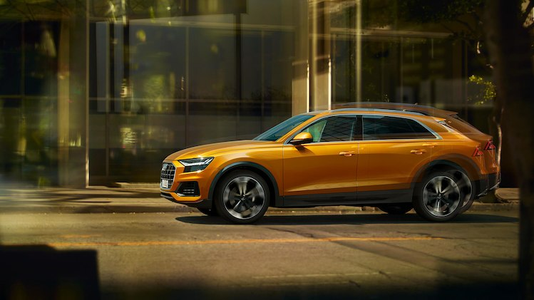

The Audi Q8 combines the elegance of a four-door luxury coupé with the
versatility of an SUV. The powerful front and the sloping roof line create
dynamism. The sporty interior conveys a luxurious charm and, together with
the optionally-adjustable rear seat, also offers plenty of space in the rear.
The lounge character of the interior makes it an ideal companion for business
or leisure.

With the imposing Singleframe in octagonal design, the
Audi Q8 is the new face of the Q family. The brawny radiator grille
stands upright and, together with the spoiler that has been drawn
toward the front and the large, highly contoured air inlets,
emphasizes the self-confident look. The elegantly sloping roofline
terminates in gently inclined D-pillars and rests against the quattro
blisters above the wheel arches, which house up to 22-inch wheels. A
light strip connects the units at the rear.
Fuel consumption combined *: 6.8-6.6 l/100km
CO₂-emissions combined *: 179-172 g/km
Sporty compact proportions paired with the deep roof and a flat window form the
rear section. The boot lid of the Audi Q8 ends in a tear-off edge - it connects
the rear quattro blisters. A narrow, high-gloss black element with an integrated
light band stretches between the rear lights. It is a feature of Audi's top models
and emphasises the width of the Q8. Both by day and by night, an independent light
signature is created, as was the case with the original quattro. The striking
diffuser with its four vertical guide elements captures the look of the single
frame. The large tailpipe apertures are integrated at its edges.

The off-road look
The spoiler, wheel arch trims, door attachment strips
and diffuser are highlighted in colour to emphasise the off-road look.
The design is reminiscent of the original quattro in many details. A
light band connects the units at the rear with each other. As with the
Audi Ur-quattro, it is underlaid with a black surface.
Fuel consumption combined *: 6.8-6.6 l/100km
CO₂-emissions combined *: 179-172 g/km